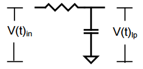
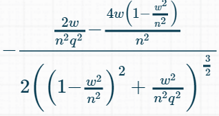
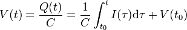
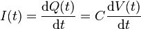

We were inspired by the Dancing robot and noticed that Dancing monkey does a great beat detection (octave/matlab).
http://www.instructables.com/id/Musical-Robot/
http://www.mathworks.com/matlabcentral/fileexchange/32374-legacy-matlab-and-simulink-support-for-arduino
Input
The MSGEQ7 gives the volume envelopes for 7 frequency bands.
Smoothing
Apply a low pass filter, maybe an exponential moving average [mpinner, code]
https://learn.sparkfun.com/tutorials/hackers-in-residence—sound-and-motion-reactivity-for-wearables
Beat detection
Goal is to determine the periodicity of the note onset pulses. These can be seen as a quasi-periodic and noisy pulse-train that exhibits large peaks at note attacks.
The volume envelope can be used to find the music measure period auto correlation.
Use autocorrelation to estimate tempo [audiograins] [Takeda] [urakawa] [Alonson]
http://dpeckett.com/beat-detection-on-the-arduino
http://blog.hzldv.com/beat_detection uses Processing based libraries: sound, minim
https://www.clear.rice.edu/elec301/Projects01/beat_sync/beatalgo.html
http://archive.gamedev.net/archive/reference/programming/features/beatdetection/index.html
http://stackoverflow.com/questions/657073/how-to-detect-the-bpm-of-a-song-in-php (beatroot)
https://github.com/marsyas/marsyas
http://aubio.org/
Single pole low pass filter
Low-pass filters are used whenever high frequency components must be removed from a signal. A single-pole passive RC filter consists of a resistor and capacitor in series [RC Circuit]. The low-pass output is the voltage over the capacitor (Vc). It is called an Infinite-Impulse Response (IIR) filter, because if you give it an impulse input, the output takes an infinite time to go down to zero.
Capacitor complex impedance
A capacitor stores energy in an electric field. Its capacitance (C) in Farad is defined as a function of the charge (q) and potential voltage difference (u).
C ≡ q(t) / u(t)
The charge (q) is a function of the current accumulated over time (assuming no initial charge)
q = ∫ i(τ)/dτ (from 0 to t)
Combining these equations [wiki]
u(t) = q(t) / C = 1/C * ∫ i(τ)/dτ
Solving for the current
∫ i(τ)/dτ = C . u(t) for τ from 0 to t
Taking the derivative on both sides, gives the current as a function of the voltage [wiki]
i(t) = C . du(t) / dt, or abbreviated to i = C. du/dt
To avoid working with differential equations, we use the Laplace transform. This way we can use the complex frequency domain instead [wiki]
ℒ{ i(t) } = ℒ{ C . du(t) / dt }
I(s) = C . s . U(s), where I(s) = ℒ{ i(t) } and U(s) = ℒ{ v(t) }
The complex impedance is defined as
Z(s) ≡ U(s) / I(s)
Using this definition and solving the previous equation for the complex impedance Z(s) we get
Z(s) = 1 / sC
Transfer function
The output voltage (Vc) is a function of the current flowing into the capacitor (Vin-Vc)/R. This represents a negative feedback [Cypress].
The transfer function defines the filter’s response to any arbitrary input signal.
H(s) ≡ Vc/Vin
The voltage across the capacitor can be calculated by using the voltage divider equation.
H(s) = Zc / (Zc + Zr) = 1/sC / ( 1/sC + R )
Multiplying the numerator and denomerator with sC yields
H(s) = 1 / (1 + sRC )
This is a 1st order system, because the order of a filter is the highest power of the variable s in its transfer function. The order of a filter is usually equal to the total number of capacitors and inductors in the circuit.
Poles
This transfer function has a single pole at
1 + sRC = 0 ⇒ s = -1/RC
Gain
Knowing the transfer function magnitude (or gain) at each frequency allows us to determine how well the filter can distinguish between signals at different frequencies. The transfer function magnitude versus frequency is called the amplitude response. By replacing the variable s with jω, where j is equal to √-1 , and ω is the radian frequency, we can find the effect on the magnitude and phase of the input signal.H(ω) = 1 / (1 + jωRC )
The gain is defined asG(ω) ≡ |H(jω)|
Substituting H(jω)G(ω) = |1 / (1+ sRC)| = 1/√(12+ (ωRC)2)
Phase
The phase response of the filter gives the amount of phase shift introduced in sinusoidal signals as a function of frequency. A change in phase of a signal also represents a change in time. [Lacanette]
The phase is defined as
φ(ω) = ∠H(jω) = atan( Im{H(jω)} / Re{H(jω)} )
Split the transfer function in Real and Imaginary and parts by multiplying with the complex conjugate of the denominator.
H(ω) = 1 / (1 + jωRC ) = (1 – jωRC ) / ((1 – jωRC )(1 + jωRC )) = (1 – jωRC ) / (1 – (jωRC)2) = (1 – jωRC ) / (1 + (ωRC)2)
Therefore
φ(ω) = atan( -ωRC / 1 ) = atan(-ωRC)
Using Euler theorem, we can express the output (Uc) as a phasor
Uc = Uin . G . ejφ
Cutoff frequency
The cutoff frequencies (fc) is usually assumed to be the frequency where the gain has dropped by 3 decibels (1/√2).
1/√2 = 1/√(12+ (ωcRC)2) ⇒ 12 + (ωcRC)2 = 2 ⇒ ωcCR = 1 ⇒ ωc = 1 / RC
To get the center frequency and phase in Hz, substitute ω=2πf
fc = 1 / 2πRC
The corresponding phase shift is
φc = atan(-ωcRC) = atan(-1/RC * RC) = atan(-1) = -π/4 ∼ -45°
Measuring the quality
The center frequency is equal to the geometric mean of the -3 dB frequencies ( fc=√(fc1.fc2) ).
Another quantity used to describe the performance of a filter is the filter’s “Q”. This is a measure of the “sharpness” of the amplitude response. The Q of a band-pass filter is the ratio of the center frequency to the difference between the -3 dB frequencies (also known as the -3 dB bandwidth). Q=fc / (f2-f1)
Roll-off
The rate of change of attenuation between the passband and the stopband also differs from one filter to the next. The slope of the curve in this region depends strongly on the order of the filter, with higher-order filters having steeper cutoff slopes. The attenuation slope is usually expressed in dB/octave (an octave is a factor of 2 in frequency).
Earlier, we found the gain (G) and cutoff frequency (ωc)
G(ω) = 1/√(12+ (ωRC)2)
ωc = 1 / RC
Combining these
G(ω) = 1/√(12+ (ω/ωc)2) = 1 / √(1+(ω/ωc)2)
Since the range of amplitudes may also be large, the amplitude scale is usually expressed in decibels (20.loglH(ω)l)
GdB(ω) = 10.log(G(jω)) = 10.log( 1 / √(1+(ω/ωc)2) )
At ω >> ωc,
GdB(ω) = 10.log( 1 / ω/ωc ) = 10.log(ωc/ω)
One octave higher at ω = 2.ωc, we get
ΔGdB(ω) = 10.log( ωc / 2ωc ) = 10.log( 1/2 ) ≅ -6 dB/octave
This single-pole arrangement gives us a roll-off slope of -6 dB/octave (-20dB/decade) attenuation of frequencies above the cut-off point at ƒc [wiki]. An Octave is a doubling (multiply by 2) or halving (divide by 2) of the frequency scale. \(\frac{1}{\sqrt{{\left(\frac{{\omega}^{2}}{{\omega_n}^{2}} – 1\right)}^{2} + \frac{{\omega}^{2}}{Q^{2} {\omega_n}^{2}}}}\)
It is also usually desirable to have amplitude and phase response curves that cover a wide range of frequencies. A logarithmic frequency scale is very useful in such cases, as it gives equal weight to equal ratios of frequencies. Those interested in other filters such as band-reject or band-pass filters, refer to Nat’l Semi App Note 779.
Two pole low pass filter
Higher order filters improve the roll-off slope, but even passive filters may introduce oscillation. The 2nd order low-pass filter on page 5 is of special interest [AN779].
exhibit a resonant peak in the vicinity of the cut-off frequency
A unity gain 2nd order low pass transfer function is of the form [McNames]
H(s) = ωn2 / (s2 + 2ζωns + ωn2)
ωc is the undampened natural frequency, ζ is the dampening ratio
If ζ ≥ 1, the poles are real • If 0 < ζ < 1, the poles are complex • If ζ = 0, the poles are imaginary: p1,2 = ±jωn • If ζ < 0, the poles are in the right half plane (Re{p} > 0) and the system is unstable
Can also be expressed as
H(s) = 1 / ( (s/ωn)2 + s/Qωn + 1)
where Q ≡ 1 / 2ζ. Substituting s=jω
H(ω) = 1 / ( (jω/ωn)2 + jω/Qωn + 1) = 1 / ( 1 – (ω/ωn)2 + jω/Qωn)
Unity gain and phase low pass magnitude response
20.log|H(ω)| = 20.log| 1 – (ω/ωn)2 + jω/Qωn |-1 = -20.log10( √( (1 – ω2/ωn2)2 + (ω/Qωn)2 )
∠H(ω) = ∠ ( 1 / ( 1 – (ω/ωn)2 + jω/Qωn ) ) = atan ( ω/Qωn / (1 – (ω/ωn)2 ) =
for ω << ωn
20.log|H(ω)| ≈ -20.log|1| = 0 [dB]
∠H(ω) = atan(1) = 0°
for ω >> ωn
20.log|H(ω)| ≈ -20.log(ω2/ωn2) = -40.log(ω2/ωn2) [dB]
∠H(ω) = atan(-1) = -180°
for ω = ωn
20.log|H(ω)| ≈ -20.log(1/Q) = -20.log(Q) [dB]
∠H(ω) = atan(-j) = -90°
for high values of Q, the maximum |H(ω)| > 1. This is called peaking.
Frequency where |H(ω)| is maximum
d(|H(ω)|)/dω = 0
⇒|H(ω)|’ = d/dω [ 1 / ( √( (1 – ω2/ωn2)2 + (ω/Qωn)2 ) ]
feeding “1 / ( sqrt( (1 – (w^2)/(n^2))^2 + (w/(Q*n))^2 ) )” to the derivative calculator, returns

or maybe
w = var(‘w’, latex_name=r’\omega’)
n = var(‘w_n’, latex_name=r’\omega_n’)
Q = var(‘Q’)
H = 1 / ( 1 – (w/n)^2 + i*w/(Q*n) )
G = abs(H))
show(G)
G2 = 1 / ( sqrt( (1 – (w^2)/(n^2))^2 + (w/(Q*n))^2 ) )
show(G2)
show(solve(diff(G,w)==0,w))
numerator must be 0
⇒2ω / ωn2 Q2 – 4ω(1 – ω2/ωn2)/ωn2 = 0
⇒ 2ω = 4ω(1 – ω2/ωn2).Q2 ⇒1 = 2(1 – ω2/ωn2).Q2
⇒(1 – ω2/ωn2).Q2 = 1/2 ⇒ 1 – ω2/ωn2 = 1 / 2Q2
⇒– ω2/ωn2. = 1 / 2Q2 – 1 ⇒ω2/ωn2 = 1 – 1 / 2Q2
⇒ω2 = ωn2(1 – 1 / 2Q2) ⇒ω = ωn√(1 – 1 / 2Q2)
Or using sagemath
w = var(‘w’, latex_name=r’\omega’)
n = var(‘w_n’, latex_name=r’\omega_n’)
Q = var(‘Q’)
G = 1 / ( sqrt( (1 – (w^2)/(n^2))^2 + (w/(Q*n))^2 ) )
show(solve(diff(G,w) == 0, w))
For Q>√2, the maximum magnitude is at
ω = ωn√(1 – 1 / 2Q2) ≡ ωr
The magnitude is found by substituting this back in the |H(ω)| equation
|Hωr| = 1 / ( √( (1 – (ωn√(1 – 1 / 2Q2))2/ωn2)2 + ((ωn√(1 – 1 / 2Q2))/Qωn)2 )
Sagemath to the rescue
w = var(‘w’, latex_name=r’\omega’)
n = var(‘w_n’, latex_name=r’\omega_n’)
Q = var(‘Q’)
G = 1 / ( sqrt( (1 – (w^2)/(n^2))^2 + (w/(Q*n))^2 ) )
C = G.substitute(w == n * sqrt(1 – 1/(2*Q^2)))
show( simplify(C) )
Feeding this to wolframalpha yields
|Hωr| = 2 / sqrt( (4Q2 – 1) / Q4 )
|Hωr| = 2.Q2 / sqrt( (4Q2 – 1) )
|Hωr| = Q / ( 1 – 1 / 4Q2 )
The largest Q before the onset of peaking is Q=1/√2. Said to be maximally flat. Commonly known as a Butterworth response. In this case |H(ωn)| = -3 dB, and ωn is the cutoff frequency.
Comments
- The second-order response attenuates twice as fast as a first-order response (40 dB/decade)
- Generally better than the cascade of two first-order filters
- Offers additional degree of freedom (Q), which is the gain near ω = ωn
- Q may range from 0.5 to 100 (is usually near Q=1)
RLC low-pass filter
Higher order filters may have the Amplitude and phase response curves are calculated in GNU/Octave using
% 1H in series with 1Ohm//1F, output over the 1Ohm//1F
H = tf([1], [ 1 1 1]);
[mag, phi, w] = bode(H);
figure(1), bode(H)
figure(2), polar(phi*pi/180, mag)
figure(3), nyquist(H)
Note the ripple in the pass-band where the G become >1. The higher the Q, the bigger the ripple.
The higher the R the higher the Q, and the less dampening for the resonation and http://sim.okawa-denshi.jp/en/RLClowkeisan.htm
Two pole low pass filter
If this -6dB/octave is not enough to remove an unwanted signal then two stages can be cascaded together to form a second-order (two-pole) filter and get -12 dB/octave [Storr]
Higher order can cause oscillation
fc = 1/(2π√(R1C1R2C2))
The load impedance affects the filters characteristics. To reduce the loading effect we can make the impedance of each following stage 10× the previous stage.
Butterworth
a nice description by [Lacanette] overview
laplace
[wiki]
We use two pole Infinite-Impulse Response (IIR) filters to create high and low pass filters. The IIR filter uses feedback, so if you put in an impulse (a 1 followed by 0‘s), an infinite number of non-zero values will come out.
IIR filters use less memory and clock cycles than a similar Finite-Impulse Response filter (FIR). The disadvantage is that IIR filters introduce a phase distortion. This however doesn’t affect our implementation.
[Cypress]
The AVR core includes a hardware multiplier for integers, but not for floating point numbers.
Digital Filters are very demanding
The 8-bit AVR core
his page concentrates on DSP applicaitons of 8:8 fixed point in which there are 8 bits of integer and 8 bits of fraction stored for each number. The emphasis of these implementations is on speed, but accuracy considerations are addressed.
AVR DSP at Cornell, math operations, article, multfix/macfix, using macfix
gnu fixed point math or header file
Envelope detection
Analyze the signal envelope, calculating attack-sustain-decay-release times.
Or .. have the user tick the tempo and analyze that in a way similar to Wayne and Layne’s tapper [Wayne, pic code]
Other
- http://www.terasoft.com.tw/conf/ismir2014/proceedings/T008_121_Paper.pdf
- http://www.researchgate.net/publication/228746428_Monophonic_transcription_with_autocorrelation
- http://www.terasoft.com.tw/conf/ismir2014/proceedings/T008_121_Paper.pdf
- http://scorecloud.com/cnn-google-translate-music/
On the last page of this article, we draw some conclusions.
Conclusion
2BD
Appendix
The capacitor equation. Voltage is charge over capacitance. Charge is the integral of … [wiki] 
Taking the derivative of this and multiplying by C yields the current as a function of the voltage
, or 
Where C is the capacitance (in farads) of the capacitor, i = i(t) is the electric current (in amperes) through the capacitor as a function of time, and v = v(t) is the voltage (in volts) across the terminals of the capacitor, also as a function of time. [wiki]
Taking the Laplace transform of this equation, we obtain

where
 and
and 
Solving for V(s) we have

The definition of the complex impedance Z (in ohms) is the ratio of the complex voltage V divided by the complex current I while holding the initial state Vo at zero:

Using this definition and the previous equation, we find: